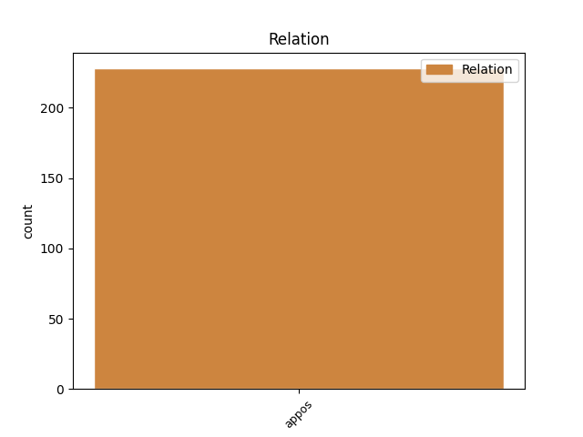
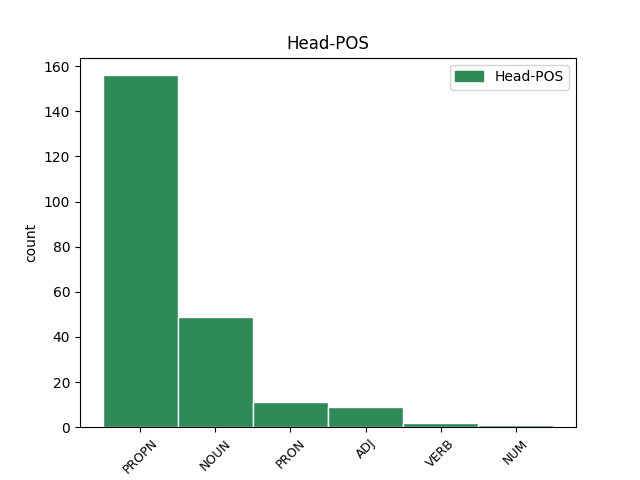
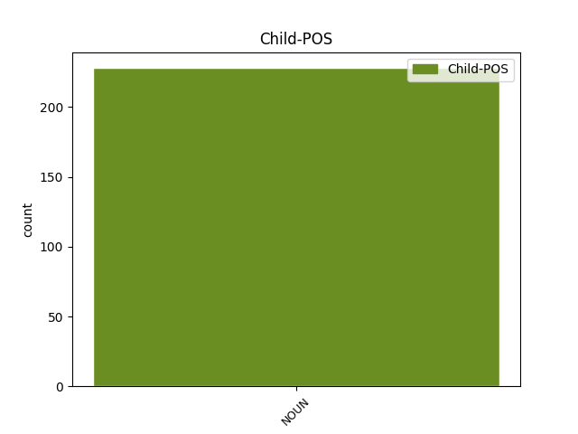

Distribution of features within this leaf



Agreement Rules sorted by frequency.
- When the dependent token is the appositional modifier(appos) of the head token, and the head token is PROPN and the dependent token is NOUN.
1 ansts _ _ _ _ 0 _ _ _
2 jah _ _ _ _ 0 _ _ _
3 gawairþi _ _ _ _ 0 _ _ _
4 fram _ _ _ _ 0 _ _ _
5 guda _ _ _ _ 0 _ _ _
6 attin _ _ _ _ 0 _ _ _
7 jah _ _ _ _ 0 _ _ _
8 Xristau Xristus PROPN Ne Case=Dat|Gender=Masc|Number=Sing 0 _ _ _
9 Iesu _ _ _ _ 0 _ _ _
10 nasjand nasjands NOUN Nb Case=Dat|Gender=Masc|Number=Sing 8 appos _ ref=TIT_1.4
11 unsaramma _ _ _ _ 0 _ _ _
1 ansts _ _ _ _ 0 _ _ _
2 jah _ _ _ _ 0 _ _ _
3 gawairþi _ _ _ _ 0 _ _ _
4 fram _ _ _ _ 0 _ _ _
5 guda guþ NOUN Nb Case=Dat|Gender=Masc|Number=Sing 0 _ _ _
6 attin atta NOUN Nb Case=Dat|Gender=Masc|Number=Sing 5 appos _ ref=TIT_1.4
7 jah _ _ _ _ 0 _ _ _
8 Xristau _ _ _ _ 0 _ _ _
9 Iesu _ _ _ _ 0 _ _ _
10 nasjand _ _ _ _ 0 _ _ _
11 unsaramma _ _ _ _ 0 _ _ _
1 unte _ _ _ _ 0 _ _ _
2 managai _ _ _ _ 0 _ _ _
3 gaggand _ _ _ _ 0 _ _ _
4 þanzei saei PRON Pr Case=Acc|Gender=Masc|Number=Plur|PronType=Rel 0 _ _ _
5 ufta _ _ _ _ 0 _ _ _
6 qaþ _ _ _ _ 0 _ _ _
7 izwis _ _ _ _ 0 _ _ _
8 iþ _ _ _ _ 0 _ _ _
9 nu _ _ _ _ 0 _ _ _
10 jag _ _ _ _ 0 _ _ _
11 gretands _ _ _ _ 0 _ _ _
12 qiþa _ _ _ _ 0 _ _ _
13 þans _ _ _ _ 0 _ _ _
14 fijands fijands NOUN Nb Case=Acc|Gender=Masc|Number=Plur 4 appos _ ref=PHIL_3.18
15 galgins _ _ _ _ 0 _ _ _
16 Xristaus _ _ _ _ 0 _ _ _
17 þizeiei _ _ _ _ 0 _ _ _
18 andeis _ _ _ _ 0 _ _ _
19 wairþiþ _ _ _ _ 0 _ _ _
20 fralusts _ _ _ _ 0 _ _ _
21 þizeiei _ _ _ _ 0 _ _ _
22 guþ _ _ _ _ 0 _ _ _
23 wamba _ _ _ _ 0 _ _ _
24 ist _ _ _ _ 0 _ _ _
25 jah _ _ _ _ 0 _ _ _
26 wulþaus _ _ _ _ 0 _ _ _
27 in _ _ _ _ 0 _ _ _
28 skandai _ _ _ _ 0 _ _ _
29 ize _ _ _ _ 0 _ _ _
30 þaiei _ _ _ _ 0 _ _ _
31 airþeinaim _ _ _ _ 0 _ _ _
32 fraþjand _ _ _ _ 0 _ _ _
1 qaþ _ _ _ _ 0 _ _ _
2 auk _ _ _ _ 0 _ _ _
3 sums sums ADJ Px Case=Nom|Gender=Masc|Number=Sing 0 _ _ _
4 ize _ _ _ _ 0 _ _ _
5 swes _ _ _ _ 0 _ _ _
6 ize _ _ _ _ 0 _ _ _
7 praufetus praufetes NOUN Nb Case=Nom|Gender=Masc|Number=Sing 3 appos _ ref=TIT_1.12
1 akei _ _ _ _ 0 _ _ _
2 sa _ _ _ _ 0 _ _ _
3 gaþlaihands ga-þláihan VERB V- Case=Nom|Gender=Masc|Number=Sing|Strength=Strong|Tense=Pres|VerbForm=Part|Voice=Act 0 _ _ _
4 hnaiwidaim _ _ _ _ 0 _ _ _
5 gaþrafstida _ _ _ _ 0 _ _ _
6 uns _ _ _ _ 0 _ _ _
7 guþ guþ NOUN Nb Case=Nom|Gender=Masc|Number=Sing 3 appos _ ref=2COR_7.6
8 in _ _ _ _ 0 _ _ _
9 quma _ _ _ _ 0 _ _ _
10 Teitaus _ _ _ _ 0 _ _ _
Disagree Examples:
1 jah _ _ _ _ 0 _ _ _
2 usnemun _ _ _ _ 0 _ _ _
3 þrins _ _ _ _ 0 _ _ _
4 tiguns tigjus* NUM Ma Case=Acc|Gender=Fem,Masc|Number=Plur 0 _ _ _
5 silubreinaize _ _ _ _ 0 _ _ _
6 andawairþi andawairþi NOUN Nb Case=Acc|Gender=Neut|Number=Sing 4 appos _ ref=MATT_27.9
7 þis _ _ _ _ 0 _ _ _
8 wairþodins _ _ _ _ 0 _ _ _
9 þatei _ _ _ _ 0 _ _ _
10 garahnidedun _ _ _ _ 0 _ _ _
11 fram _ _ _ _ 0 _ _ _
12 sunum _ _ _ _ 0 _ _ _
13 Israelis _ _ _ _ 0 _ _ _
14 jah _ _ _ _ 0 _ _ _
15 atgebun _ _ _ _ 0 _ _ _
16 ins _ _ _ _ 0 _ _ _
17 und _ _ _ _ 0 _ _ _
18 akra _ _ _ _ 0 _ _ _
19 kasjins _ _ _ _ 0 _ _ _
20 swaswe _ _ _ _ 0 _ _ _
21 anabauþ _ _ _ _ 0 _ _ _
22 mis _ _ _ _ 0 _ _ _
23 frauja _ _ _ _ 0 _ _ _
1 jah _ _ _ _ 0 _ _ _
2 usiddjedun _ _ _ _ 0 _ _ _
3 du _ _ _ _ 0 _ _ _
4 imma _ _ _ _ 0 _ _ _
5 all _ _ _ _ 0 _ _ _
6 Iudaialand _ _ _ _ 0 _ _ _
7 jah _ _ _ _ 0 _ _ _
8 Iairusaulwmeis _ _ _ _ 0 _ _ _
9 jah _ _ _ _ 0 _ _ _
10 daupidai _ _ _ _ 0 _ _ _
11 wesun _ _ _ _ 0 _ _ _
12 allai _ _ _ _ 0 _ _ _
13 in _ _ _ _ 0 _ _ _
14 Iaurdane Iaurdanus* PROPN Ne Case=Dat|Gender=Masc|Number=Sing 0 _ _ _
15 aƕai aƕa NOUN Nb Case=Dat|Gender=Fem|Number=Sing 14 appos _ ref=MARK_1.5
16 fram _ _ _ _ 0 _ _ _
17 imma _ _ _ _ 0 _ _ _
18 andhaitandans _ _ _ _ 0 _ _ _
19 frawaurhtim _ _ _ _ 0 _ _ _
20 seinaim _ _ _ _ 0 _ _ _
1 þiuþeigs _ _ _ _ 0 _ _ _
2 frauja _ _ _ _ 0 _ _ _
3 guþ _ _ _ _ 0 _ _ _
4 Israelis _ _ _ _ 0 _ _ _
5 unte _ _ _ _ 0 _ _ _
6 gaweisoda _ _ _ _ 0 _ _ _
7 jah _ _ _ _ 0 _ _ _
8 gawaurhta _ _ _ _ 0 _ _ _
9 uslausein _ _ _ _ 0 _ _ _
10 managein _ _ _ _ 0 _ _ _
11 seinai _ _ _ _ 0 _ _ _
12 jah _ _ _ _ 0 _ _ _
13 urraisida _ _ _ _ 0 _ _ _
14 haurn _ _ _ _ 0 _ _ _
15 naseinais _ _ _ _ 0 _ _ _
16 unsis _ _ _ _ 0 _ _ _
17 in _ _ _ _ 0 _ _ _
18 garda _ _ _ _ 0 _ _ _
19 Daweidis _ _ _ _ 0 _ _ _
20 þiumagaus _ _ _ _ 0 _ _ _
21 seinis _ _ _ _ 0 _ _ _
22 swaswe _ _ _ _ 0 _ _ _
23 rodida _ _ _ _ 0 _ _ _
24 þairh _ _ _ _ 0 _ _ _
25 munþ _ _ _ _ 0 _ _ _
26 weihaize _ _ _ _ 0 _ _ _
27 þize _ _ _ _ 0 _ _ _
28 fram _ _ _ _ 0 _ _ _
29 anastodeinai _ _ _ _ 0 _ _ _
30 aiwis _ _ _ _ 0 _ _ _
31 praufete _ _ _ _ 0 _ _ _
32 seinaize _ _ _ _ 0 _ _ _
33 giban _ _ _ _ 0 _ _ _
34 nasein _ _ _ _ 0 _ _ _
35 us _ _ _ _ 0 _ _ _
36 fijandam _ _ _ _ 0 _ _ _
37 unsaraim _ _ _ _ 0 _ _ _
38 jah _ _ _ _ 0 _ _ _
39 us _ _ _ _ 0 _ _ _
40 handau _ _ _ _ 0 _ _ _
41 allaize _ _ _ _ 0 _ _ _
42 þize _ _ _ _ 0 _ _ _
43 hatandane _ _ _ _ 0 _ _ _
44 unsis _ _ _ _ 0 _ _ _
45 taujan _ _ _ _ 0 _ _ _
46 armahairtiþa _ _ _ _ 0 _ _ _
47 bi _ _ _ _ 0 _ _ _
48 attam _ _ _ _ 0 _ _ _
49 unsaraim _ _ _ _ 0 _ _ _
50 jah _ _ _ _ 0 _ _ _
51 gamunan _ _ _ _ 0 _ _ _
52 triggwos triggwa NOUN Nb Case=Gen|Gender=Fem|Number=Sing 0 _ _ _
53 weihaizos _ _ _ _ 0 _ _ _
54 seinaizos _ _ _ _ 0 _ _ _
55 aiþis aiþs NOUN Nb Case=Gen|Gender=Masc|Number=Sing 52 appos _ ref=LUKE_1.73
56 þanei _ _ _ _ 0 _ _ _
57 swor _ _ _ _ 0 _ _ _
58 wiþra _ _ _ _ 0 _ _ _
59 Abraham _ _ _ _ 0 _ _ _
60 attan _ _ _ _ 0 _ _ _
61 unsarana _ _ _ _ 0 _ _ _
62 ei _ _ _ _ 0 _ _ _
63 gebi _ _ _ _ 0 _ _ _
64 unsis _ _ _ _ 0 _ _ _
65 unagein _ _ _ _ 0 _ _ _
66 us _ _ _ _ 0 _ _ _
67 handau _ _ _ _ 0 _ _ _
68 fijande _ _ _ _ 0 _ _ _
69 unsaraize _ _ _ _ 0 _ _ _
70 galausidaim _ _ _ _ 0 _ _ _
71 skalkinon _ _ _ _ 0 _ _ _
72 imma _ _ _ _ 0 _ _ _
73 in _ _ _ _ 0 _ _ _
74 sunjai _ _ _ _ 0 _ _ _
75 jah _ _ _ _ 0 _ _ _
76 garaihtein _ _ _ _ 0 _ _ _
77 in _ _ _ _ 0 _ _ _
78 andwairþja _ _ _ _ 0 _ _ _
79 is _ _ _ _ 0 _ _ _
80 allans _ _ _ _ 0 _ _ _
81 dagans _ _ _ _ 0 _ _ _
82 unsarans _ _ _ _ 0 _ _ _
1 þande _ _ _ _ 0 _ _ _
2 seƕun _ _ _ _ 0 _ _ _
3 augona _ _ _ _ 0 _ _ _
4 meina _ _ _ _ 0 _ _ _
5 nasein naseins NOUN Nb Case=Acc|Gender=Fem|Number=Sing 0 _ _ _
6 þeina _ _ _ _ 0 _ _ _
7 þoei _ _ _ _ 0 _ _ _
8 manwides _ _ _ _ 0 _ _ _
9 in _ _ _ _ 0 _ _ _
10 andwairþja _ _ _ _ 0 _ _ _
11 allaizo _ _ _ _ 0 _ _ _
12 manageino _ _ _ _ 0 _ _ _
13 liuhaþ liuhaþ NOUN Nb Case=Acc|Gender=Neut|Number=Sing 5 appos _ ref=LUKE_2.32
14 du _ _ _ _ 0 _ _ _
15 andhuleinai _ _ _ _ 0 _ _ _
16 þiudom _ _ _ _ 0 _ _ _
17 jah _ _ _ _ 0 _ _ _
18 wulþu _ _ _ _ 0 _ _ _
19 managein _ _ _ _ 0 _ _ _
20 þeinai _ _ _ _ 0 _ _ _
21 Israela _ _ _ _ 0 _ _ _
1 iþ _ _ _ _ 0 _ _ _
2 weis _ _ _ _ 0 _ _ _
3 merjam _ _ _ _ 0 _ _ _
4 Iesu Iesus PROPN Ne Case=Acc|Gender=Masc|Number=Sing 0 _ _ _
5 ushramidana _ _ _ _ 0 _ _ _
6 Iudaium _ _ _ _ 0 _ _ _
7 gamarzein gamarzeins NOUN Nb Case=Acc|Gender=Fem|Number=Sing 4 appos _ ref=1COR_1.23
8 iþ _ _ _ _ 0 _ _ _
9 þiudom _ _ _ _ 0 _ _ _
10 dwaliþa _ _ _ _ 0 _ _ _
11 iþ _ _ _ _ 0 _ _ _
12 þaim _ _ _ _ 0 _ _ _
13 galaþodam _ _ _ _ 0 _ _ _
14 Iudaie _ _ _ _ 0 _ _ _
15 jah _ _ _ _ 0 _ _ _
16 þiudo _ _ _ _ 0 _ _ _
17 Xristu _ _ _ _ 0 _ _ _
18 gudis _ _ _ _ 0 _ _ _
19 maht _ _ _ _ 0 _ _ _
20 jah _ _ _ _ 0 _ _ _
21 gudis _ _ _ _ 0 _ _ _
22 handugein _ _ _ _ 0 _ _ _